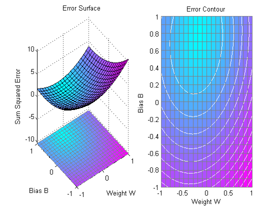

Pattern Association Showing Error Surface
A linear neuron is designed to respond to specific inputs with target outputs.
P defines two 1-element input patterns (column vectors). T defines the associated 1-element targets (column vectors).
P = [1.0 -1.2]; T = [0.5 1.0];
ERRSURF calculates errors for a neuron with a range of possible weight and bias values. PLOTES plots this error surface with a contour plot underneath. The best weight and bias values are those that result in the lowest point on the error surface.
w_range = -1:0.1:1;
b_range = -1:0.1:1;
ES = errsurf(P,T,w_range,b_range,'purelin');
plotes(w_range,b_range,ES);
 The function NEWLIND will design a network that performs with the minimum error.
net = newlind(P,T);
SIM is used to simulate the network for inputs P. We can then calculate the neurons errors. SUMSQR adds up the squared errors.
A = sim(net,P) E = T - A SSE = sumsqr(E)
A =
0.5000 1.0000
E =
0 0
SSE =
0
PLOTES replots the error surface. PLOTEP plots the "position" of the network using the weight and bias values returned by SOLVELIN. As can be seen from the plot, SOLVELIN found the minimum error solution.
plotes(w_range,b_range,ES);
plotep(net.IW{1,1},net.b{1},SSE);
We can now test the associator with one of the original inputs, -1.2, and see if it returns the target, 1.0.
p = -1.2; a = sim(net,p)
a =
1